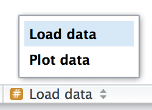

[1] 1.00000000 0.00000000 0.51841928 0.28577807 0.04034708 0.33646783
[7] 0.82568767 0.18920626 0.37144497 0.5888497318 Funciones
18.1 Introducción
Una de las mejores maneras de lograr tener mayor alcance haciendo ciencia de datos es escribir funciones. Las funciones te permitirán automatizar algunas tareas comunes de una forma más poderosa y general que copiar-y-pegar. Escribir funciones tiene tres grandes ventajas sobre copiar-y-pegar:
Puedes dar a la función un nombre evocador que hará tu código más fácil de entender.
A medida que cambien los requerimientos, solo necesitarás cambiar tu código en un solo lugar, en vez de en varios lugares.
Eliminas las probabilidades de errores accidentales cuando copias y pegas (por ej., al actualizar el nombre de una variable en un lugar, pero no en otro).
Escribir funciones es un viaje de toda una vida. Incluso después de usar R por varios años, seguimos aprendiendo nuevas técnicas y mejores formas de abordar viejos problemas. El objetivo de este capítulo no es enseñarte cada detalle esotérico de las funciones, sino introducirte en este tema con consejos pragmáticos que puedas aplicar inmediatamente.
Además de consejos prácticos para escribir funciones, este capítulo también te entregará consejos de estilo para tu código. Escribir código con buen estilo es como utilizar la puntuación correcta. Puedesmanejartesinella, pero utilizarla hace las cosas más fáciles de leer. Al igual que con los estilos de puntuación, hay muchas posibles variaciones. Si bien aquí presentamos el estilo que nosotros usamos en nuestro código, lo más importante es que seas consistente.
18.1.1 Prerrequisitos
El foco de este capítulo es escribir funciones en R base, por lo que no necesitarás ningún paquete extra.
18.2 ¿Cuándo deberías escribir una función?
Deberías considerar escribir una función cuando has copiado y pegado un bloque de código más de dos veces (es decir, ahora tienes tres copias del mismo). Mira, por ejemplo, el siguiente código. ¿Qué es lo que hace?
Es posible que hayas podido descifrar que lo que hace es reescalar cada columna para que tenga un rango de 0 a 1. Pero ¿has encontrado el error? Ocurrió copiando-y-pegando el código para df$b: Hemos olvidado de cambiar a a b. Extraer el código repetido en una función es una buena idea, ya que previene que cometas errores como este.
Para escribir una función, lo primero que necesitas hacer es analizar el código. ¿Cuantos inputs tiene?
Este código tiene un solo input df$a. (Si te sorprende que TRUE no es un input, puedes explorar el ejercicio de abajo). Para hacer los inputs más claros, es buena idea reescribir el código usando variables temporales con nombres generales. Acá el código requiere un solo vector numérico, por lo que lo llamaremos x:
Hay algo de duplicación en este código. Estamos computando el rango de datos tres veces, así que tiene sentido hacerlo en un solo paso:
[1] 1.00000000 0.00000000 0.51841928 0.28577807 0.04034708 0.33646783
[7] 0.82568767 0.18920626 0.37144497 0.58884973Sacar cálculos intermedios en variables nombradas es una buena práctica porque deja más claro qué es lo que está haciendo el código. Ahora que hemos simplificado el código y chequeado de que aún funciona, podemos convertirlo en una función:
[1] 0.0 0.5 1.0Hay tres pasos claves para crear una función nueva:
Necesitas elegir un nombre para la función. Aquí hemos usado
rescale01, ya que esta función reescala (rescale, en inglés) un vector para que se ubique entre 0 y 1.Listar los inputs, o argumentos, de la función dentro de
function. Aquí solo tenemos un argumento. Si tenemos más, la llamada se vería comofunction(x, y, z).Situar el código que has creado en el cuerpo de una función, un bloque de
{que sigue inmediatamente afunction(...).
Ten en cuenta el proceso general: solo hemos creado la función después de darnos cuenta cómo funciona con un input simple. Es más fácil empezar con código que funciona y luego convertirlo en una función; es más difícil crear la función y luego tratar que funcione.
En este punto es una buena idea chequear tu función con algunos inputs diferentes:
[1] 0.0 0.5 1.0[1] 0.00 0.25 0.50 NA 1.00A medida que escribas más y más funciones eventualmente querrás convertir estos tests interactivos informales en tests formales y automatizados. Este proceso se llama pruebas unitarias (unit testing). Desafortunadamente, este tema está más allá del alcance de este libro, pero puedes aprender sobre él en https://r-pkgs.org/tests.html.
Podemos simplificar el ejemplo original ahora que tenemos una función:
Comparado al original, este código es fácil de entender y hemos eliminado erorres del tipo copiar-y-pegar. Existe aún un poco de duplicación, ya que estamos relizando lo mismo en diferentes columnas. Aprenderemos cómo eliminar esta duplicación en el capítulo sobre [iteración], una vez que hayas aprendido más sobre las estructuras de R en el capítulo sobre [vectores].
Otra ventaja de las funcioens es que si nuestros requerimientos cambian, solo necesitamos hacer modificaciones en un solo lugar. Por ejemplo, podríamos descubrir que algunas de nuestras variables incluyen valores infinitos, lo que hará que rescale01() falle:
[1] 0 0 0 0 0 0 0 0 0 0 NaNDebido a que hemos extraído el código en una función, solo necesitamos corregirlo en un lugar:
[1] 0.0000000 0.1111111 0.2222222 0.3333333 0.4444444 0.5555556 0.6666667
[8] 0.7777778 0.8888889 1.0000000 InfEsta es una importante parte del principio de “no repetirse a uno mismo” (conocido como DRY: del inglés “Do not Repeat Yourself”). Cuanta más repetición tengas en tu código, más lugares tendrás que recordar de actualizar cuando las cosas cambien (¡y eso siempre sucede!), y es más probable que crees errores (bugs) a lo largo del tiempo.
18.2.1 Ejercicios
¿Por qué
TRUEno es un parámetro pararescale01()? ¿Qué pasaría sixestá contenido en un valor único perdido yna.rmfueseFALSE?En la segunda variante de
rescale01(), los valores infinitos se dejan sin cambio. Reescriberescale01()para que-Infsea convertido a 0, eInfa 1.Practica convertir los siguientes fragmentos de código en funciones. Piensa en lo que hace cada función. ¿Cómo la llamarías? ¿Cuántos argumentos necesita? ¿Puedes reescribirla para ser más expresiva o con menos duplicación de código?
::: {.cell} :::Escribe tus propias funciones para computar la varianza y la inclinación de un vector numérico. La varianza se define como \[ \mathrm{Var}(x) = \frac{1}{n - 1} \sum_{i=1}^n (x_i - \bar{x}) ^2 \text{,} \] donde \(\bar{x} = (\sum_i^n x_i) / n\) es la media de la muestra. La inclinación se define como \[ \mathrm{Skew}(x) = \frac{\frac{1}{n-2}\left(\sum_{i=1}^n(x_i - \bar x)^3\right)}{\mathrm{Var}(x)^{3/2}} \text{.} \]
Escribe
both_na()(ambos_na()), una función que toma dos vectores de la misma longitud y retorna el número de posiciones que tienenNAen ambos vectores.¿Qué hacen las siguientes funciones? ¿Por qué son tan útiles pese a ser tan cortas?
::: {.cell} :::Lee la letra completa de “Pequeño Conejito Foo Foo”. Como ves, hay mucha duplicación en la letra de la canción. Extiende el ejemplo inicial de pipes para recrear la canción completa usando funciones para reducir la duplicación.
18.3 Las funciones son para los seres humanos y para las computadoras
Es importante recordar que las funciones no son solo para las computadoras, sino también para los seres humanos. A R no le importa el nombre de tu función ni los comentarios que tiene, pero estos sí serán importantes para los seres humanos que la lean. En esta sección se discutirán algunas cosas que debes tener en mente a la hora de escribir funciones entendibles para otras personas.
El nombre de una función es importante. Idealmente, debería ser corto, pero que evoque claramente lo que la función hace. ¡Eso es difícil! Es mejor que sea claro a que sea corto, considerando que la función de autocompletar de RStudio hace más fácil tipear nombres largos.
Generalmente, los nombres de las funciones deberían ser verbos y los argumentos sustantivos. Hay algunas excepciones: usar un sustantivo está bien si la función computa el valor de un sustantivo muy conocido (por ejemplo, mean() — (del inglés media) es mejor que compute_mean()— (del inglés computar media)), o accede a alguna propiedad del objeto (por ejemplo, coef()— (abreviatura en inglés de coeficientes) es mejor que get_coefficients()— (en inglés, obtener coeficientes)). Una buena señal de que un sustantivo puede ser una mejor elección es analizar si estás usando un verbo muy amplio como “obtener”, “computar”, “calcular” o “determinar”. Utiliza tu criterio y no tengas miedo de renombrar tu función si encuentras un nombre mejor más tarde.
Si el nombre de tu función está compuesto por múltiples palabras, te recomendamos usar el formato serpiente, o “snake_case”, en el que cada palabra en minúscula está separada por un guión bajo. Otra alternativa popular es es camelCase, o formato camello. No importa realmente cuál elijas, lo importante es que seas consistente: elije uno o el otro y quédate con él. R mismo no es muy consistente, pero no hay nada que puedas hacer al respecto. Asegúrate de no caer en la misma trampa haciendo tu código lo más consistente posible.
Si tienes una familia de funciones que hacen cosas similares, asegúrate de que tengan nombres y argumentos consistentes. Utiliza un prefijo común para indicar que están conectadas. Eso es mejor que usar un sufijo común, ya que el autocompletado te permite escribir el prefijo y ver todos los otros miembros de la familia.
Un buen ejemplo de este diseño es el paquete stringr: si no recuerdas exactamente qué función necesitas, puedes escribir str_y el autocompletado te ayudará a refrescar tu memoria. Siempre que sea posible, evita sobrescribir funciones y variables ya existentes. No siempre es posible hacer esto, ya que hay un montón de nombres buenos que ya han sido utilizados por otros paquetes. De todas maneras, evitar el uso de los nombres más comunes de R base ahorrará confusiones.
Usa comentarios, esto es, líneas que comienzan con #, para explicar el “porqué” de tu código. En general deberías evitar comentarios que expliquen el “qué” y el “cómo”. Si no se entiende qué es lo que hace el código leyéndolo, deberías pensar cómo reescribirlo de manera que sea más claro. ¿Necesitas agregar algunas variables intermedias con nombres útiles? ¿Deberías dividir una función larga en subcomponentes para que pueda ser nombrada? Sin embargo, tu código nunca podrá capturar la razón detrás de tus decisiones: ¿Por qué elegiste este enfoque frente a otras alternativas? ¿Qué otra cosa probaste que no funcionó? Es una gran idea capturar este tipo de pensamientos en un comentario.
Otro uso importante de los comentarios es para dividir tu archivo en partes, de modo que resulte más fácil de leer. Utiliza líneas largas de- y = para que resulte más fácil detectar los fragmentos.
RStudio proporciona un método abreviado de teclado para crear estos encabezados (Cmd/Ctrl + Shift + R), y los mostrará en el menú desplegable de navegación de código en la parte inferior izquierda del editor:

18.3.1 Ejercicios
Lee el código fuente para cada una de las siguientes tres funciones, interpreta qué hacen y luego propone nombres mejores.
::: {.cell} :::Toma una función que hayas escrito recientemente y tómate 5 minutos para pensar un mejor nombre para la función y para sus argumentos.
Compara y contrasta
rnorm()yMASS::mvrnorm(). ¿Cómo podrías hacerlas más consistentes?Argumenta por qué
norm_r(),norm_d(), etc. sería una mejor opción quernorm(),dnorm(). Argumenta lo contrario.
18.4 Ejecución condicional
Una sentencia if (si) te permite ejecutar un código condicional. Por ejemplo:
Para obtener ayuda acerca de if necesitas ponerlo entre acentos graves: ?`if`. La ayuda no es especialmente útil si aún no tienens tanta experiencia programando. ¡Pero al menos puedes saber cómo llegar a ella!
Aquí se presenta una función simple que utiliza una sentencia if. El objetivo de esta función es devolver un vector lógico que describa si cada elemento de un vector tiene nombre (name).
Esta función aprovecha la regla de retorno estándar: una función devuelve el último valor que calculó. Este es uno de los dos usos de la declaración if.
18.4.1 Condiciones
La condición debe evaluar como TRUE o FALSE. Si es un vector, recibirás un mensaje de advertencia; si es una NA, obtendrás un error. Ten cuidado con estos mensajes en tu propio código:
Error in if (c(TRUE, FALSE)) {: the condition has length > 1Error in if (NA) {: missing value where TRUE/FALSE neededPuedes usar || (o) y &&(y) para combinar múltiples expresiones lógicas. Estos operadores hacen “cortocircuito”: tan pronto como || vea el primer TRUE devolverá TRUE sin calcular nada más. Tan pronto como && vea el primer FALSE, devolverá FALSE. Nunca debes usar|o & en una sentencia if: estas son operaciones vectorizadas que se aplican a valores múltiples (es por eso que las usas en filter()). Si tienes un vector lógico, puedes utilizar any() (cualquier) o all() (todo) para juntarlo en un único valor.
Ten cuidado al comprobar igualdad.== está vectorizado, lo que significa que es fácil obtener más de un output. Comprueba si la longitud ya es 1 y junta con all() o any(), o usa la función no vectorizada identical() (indéntico). identical() es una función muy estricta: siempre devuelve un solo TRUE o un solo FALSE, y no fuerza tipos de estructuras de datos. Esto significa que debes tener cuidado al comparar enteros y dobles:
[1] FALSETambién hay que tener cuidado con los números de punto flotante:
[1] 2[1] FALSE[1] 4.440892e-16En su lugar, utiliza dplyr::near() para comparaciones, como se describe en la sección sobre [comparaciones].
Y recuerda, ¡x == NA no hace nada útil!
18.4.2 Condiciones múltiples
Puedes encadenar múltiples sentencias if juntas:
Pero si terminas con una larga serie de sentencias if encadenadas, deberías considerar reescribir el código. Una técnica útil es la función switch() . Esta te permite evaluar el código seleccionado según la posición o el nombre.
function(x, y, op) {
switch(op,
plus = x + y,
minus = x - y,
times = x * y,
divide = x / y,
stop("¡operación desconocida!")
)
}Otra función útil que a menudo puede eliminar largas cadenas de sentencias if es cut() (cortar). Esta es utilizada para convertir en categóricas variables que son continuas.
18.4.3 Estilo del código
Tanto if como function deberían ir (casi) siempre entre llaves ({}) y el contenido debería tener una sangría de dos espacios. Esto hace que sea más fácil distinguir la jerarquía dentro de tu código al mirar el margen izquierdo.
La llave de apertura nunca debe ir en su propia línea y siempre debe ir seguida de una línea nueva. Una llave de cierre siempre debe ir en su propia línea, a menos que sea seguida por else. Siempre ponle sangría al código que va dentro de las llaves.
Está bien evitar las llaves si tienes una sentencia if muy corta que cabe en una sola línea:
Esto se recomienda solo para sentencias if muy breves. De lo contrario, la sentencia completa es más fácil de leer:
18.4.4 Ejercicios
¿Cuál es la diferencia entre
ifeifelse()? Lee cuidadosamente la ayuda y construye tres ejemplos que ilustren las diferencias clave.Escribe una función de saludo que diga “buenos días”, “buenas tardes” o “buenas noches”, según la hora del día. (Sugerencia: usa un argumento de tiempo que por defecto sea
lubridate::now(); eso hará que sea más fácil testear tu función).Implementa una función
fizzbuzzque tenga un solo número como input. Si el número es divisible por tres, devuelve “fizz”. Si es divisible por cinco, devuelve “buzz”. Si es divisible por tres y cinco, devuelve “fizzbuzz”. De lo contrario, devuelve el número. Asegúrate de escribir primero código que funcione antes de crear la función.¿Cómo podrías usar
cut()(cortar()) para simplificar este conjunto de sentencias if-else anidadas?
::: {.cell}
:::
¿Cómo cambiarías la llamada a `cut()` si hubieras usado `<`en lugar de `<=`? ¿Cuál es la otra ventaja principal de `cut()` para este problema? (Pista: ¿qué sucede si tienes muchos valores en `temp`?)¿Qué sucede si usas
switch()con un valor numérico?¿Qué hace la llamada a
switch()? ¿Qué sucede sixfuera “e”?::: {.cell} ::: Experimenta, luego lee cuidadosamente la documentación.
18.5 Argumentos de funciones
Los argumentos de las funciones normalmente están dentro de dos conjuntos amplios: un conjunto provee los datos a computar y el otro los argumentos que controlan los detalles de la computación. Por ejemplo:
En
log(), los datos sonx, y los detalles son labasedel algoritmo.En
mean(), los datos sonx, y los detalles son la cantidad de datos para recortar de los extremos (trim) y cómo lidiar con los valores faltantes (na.rm).En
t.test(), los datos sonxey, y los detalles del test sonalternative,mu,paired,var.equal, yconf.level.En
str_c()puedes suministrar cualquier número de caracteres a..., y los detalles de la concatenación son contralos porsepycollapse.
Generalmente, argumentos relativos a los datos deben ir primero. El detalle de los mismos podría estar al final y con valores por defecto. Se especifica un valor por defecto de la misma manera en la que se llama a una función con un argumento nombrado:
[1] 0.4423630 0.5617457[1] 0.4236067 0.5805021El valor por defecto debería ser casi siempre el valor más común. Las pocas excepciones que existen a esta regla deben realizarse con cuidado. Por ejemplo, tiene sentido que na.rm por defecto sea FALSE porque los valores faltantes son importantes. Aunque na.rm = TRUE es lo que usualmente pones en tu codigo, es una mala idea que el comportamiento por defecto sea ignorar silenciosamente los valores faltantes.
Cuando llamas una función, generalmente omites los nombres de los argumentos de datos justamente porque son los más comúnmente usados. Si quieres usar un valor distinto al por defecto en de un argumento de detalle, debes usar el nombre completo:
Puedes referirte a un argumento por su prefijo único (ej. mean(x, n = TRUE)), pero generalmente es mejor evitarlo dadas las posibilidades de confusión.
Ten en cuenta que cuando llamas a una función, debes colocar un espacio alrededor de = y siempre poner un espacio después de la coma, no antes (como cuando escribes en español). El uso del espacio en blanco hace más fácil echar un vistazo a la función para identificar los componentes importantes.
18.5.1 Elección de nombres
Los nombres de los argumentos también son importantes. A R no le importa, pero sí a quienes leen tu código (¡incluyéndo a tu futuro-yo!). En general, deberías preferir nombres largos y más descriptivos, aunque hay un puñado de nombres muy comunes y muy cortos. Vale la pena memorizar estos:
x,y,z: vectores.w: un vector de pesos.df: un data frame.i,j: índices numéricos (usualmente filas y columnas).n: longitud, o número de filas.p: número de columnas.
En caso contrario, deberías considerar hacerlos coincidir con nombres de argumentos de funciones de R que ya existen. Por ejemplo, usa na.rm para determinar si los valores faltantes deberían ser eliminados.
18.5.2 Chequear valores
A medida que vayas escribiendo más funciones, eventualmente llegarás al punto en el que no recordarás cómo opera una determinada función. En este punto es común que llames a la función con inputs inválidos. Para evitar este problema, a menudo es útil hacer las restricciones explícitas. Por ejemplo, imagina que has escrito algunas funciones para calcular estadísticos de resumen ponderados:
¿Qué pasa si x y w no son de la misma longitud?
[1] 7.666667En este caso, debido a las reglas de reciclado de vectores de R, no obtenemos un error.
Es una buena práctica verificar las condiciones previas importantes y arrojar un error (con stop(), parar), si estas no son verdaderas:
Ten cuidado de no llevar esto demasiado lejos. Debe haber un equilibrio entre la cantidad de tiempo que inviertes en hacer que tu función sea sólida y la cantidad de tiempo que pasas escribiéndola. Por ejemplo, si además agregas a la función un argumento na.rm, probablemente no lo verificaste con cuidado:
Esto es mucho trabajo con poca ganancia adicional. Una opción útil es incorporar stopifnot(): esto comprueba que cada argumento sea TRUE. En caso contrario genera un mensaje de error.
Error in wt_mean(1:6, 6:1, na.rm = "foo"): is.logical(na.rm) is not TRUETen en cuenta que al usar stopifnot() afirmas lo que debería ser cierto en lugar de verificar lo que podría estar mal.
18.5.3 Punto-punto-punto (…)
Muchas funciones en R tienen un número arbitrario de inputs:
[1] 55[1] "abcdef"¿Cómo operan estas funciones? Estas se sostienen en un argumento especial: ... (llamado punto-punto-punto). Este argumento especial captura cualquier número de argumentos que no estén contemplados de otra forma.
Es práctico porque puedes enviar estos ... a otra función. Este es un argumento multipropósito útil si tu función principalmente envuelve (wraps) a otra función. Por ejemplo, usualmente creamos estas funciones de ayuda alrededor de str_c():
[1] "a, b, c, d, e, f, g, h, i, j"Important output -----------------------------------------------------------Aquí ... nos permite enviar cualquier argumento con el que no queramos lidiar hacia str_c(). Esto es muy conveniente, pero tiene un costo asociado: cualquier argumento mal escrito no generará un error. Esto hace que sea más fácil que los errores de tipeo pasen inadvertidos:
[1] 4Si solo quieres capturar los valores de ..., entonces utiliza list(...).
18.5.4 Evaluación diferida
Los argumentos en R se evalúan de forma “perezosa”: no se computan hasta que se los necesita. Esto significa que si nunca se los usa, nunca son llamados. Esta es una propiedad importante de R como lenguaje de programación, pero generalmente no es fundamental cuando escribes tus propias funciones para el análisis de datos. Puedes leer más acerca de la evaluación diferida en https://adv-r.hadley.nz/functions.html#lazy-evaluation.
18.5.5 Ejercicios
¿Qué realiza
commas(letters, collapse = "-")? ¿Por qué?Sería bueno si se pudiera suministrar múltiples caracteres al argumento
pad, por ejemplo,rule("Title", pad = "-+"). ¿Por qué esto actualmente no funciona? ¿Cómo podrías solucionarlo?¿Qué realiza el argumento
trima la funciónmean()? ¿Cuándo podrías utilizarlo?El valor de defecto del argumento
methodparacor()esc("pearson", "kendall", "spearman"). ¿Qué significa esto? ¿Qué valor se utiliza por defecto?
18.6 Valores de retorno
Darse cuenta qué es lo que tu función debería devolver suele ser bastante directo: ¡es el porqué de crear la función en primer lugar! Hay dos cosas que debes considerar al retornar un valor:
¿Devolver un valor antes hace que tu función sea más fácil de leer?
¿Puedes hacer tu función apta para utilizarla con pipes (
%>%)?
18.6.1 Sentencias de retorno explícitas
El valor devuelto por una función suele ser la última sentencia que esta evalúa; sin embargo, puedes optar por devolver algo anticipadamente haciendo uso de la función return() (retornar o devolver en inglés). Creemos que es mejor reservar el uso de la función return() para los casos en los que es posible devolver anticipadamente una solución más simple. Una razón común para hacer esto es que los argumentos estén vacíos:
Otra razón puede ser porque tienes una sentencia if con un bloque complicado y uno sencillo. Por ejemplo, podrías escribir una sentencia if de esta manera:
Si el primer bloque es muy largo, para cuando lleges al else ya te habrás olvidado de la condición. Una forma de reescribir esto es usar un retorno anticipado para el caso sencillo:
Esto tiende a hacer el código más fácil de entender, ya que no necesitas tanto contexto para interpretarlo.
18.6.2 Escribir funciones aptas para un pipe
Si quieres escribir funciones que sean aptas para usarlas con un pipe (%>%), es importante que pienses en los valores de retorno. Conocer el tipo de objeto de tu valor de retorno significará que tu secuencia de pipes “simplemente funcionará”. Por ejemplo, en dplyr y tidyr el tipo de objeto es un data frame.
Hay dos tipos básicos de funciones aptas para pipes: transformaciones y efectos secundarios. En las transformaciones, se ingresa un objeto como primer argumento y se retorna una versión modificada del mismo. En el caso de los efectos_secundarios, el objeto ingresado no es modificado, sino que la función realiza una acción sobre el objeto (como dibujar un gráfico o guardar un archivo). Las funciones de efectos secundarios deben retornar “invisiblemente” el primer argumento, de manera que aún cuando no se impriman, puedan ser utilizados en una secuencia de pipes. Por ejemplo, esta función imprime el número de valores faltantes en un data frame:
Si la llamamos de manera interactiva, invisible() implica que el df input no se imprime:
Valores faltantes: 0Pero sigue estando ahí, solamente que no se imprime por defecto:
Valores faltantes: 0[1] "data.frame"[1] 32 11Y todavía podemos usarlo en un pipe:
Valores faltantes: 0
Valores faltantes: 1818.7 Entorno
El último componente de una función es su entorno. Esto no es algo que debas entender con profundidad cuando recién empiezas a escribir funciones. Sin embargo, es importante saber un poco acerca de los entornos, ya que son cruciales para que algunas funciones trabajen. El entorno de una función controla cómo R encuentra el valor asociado a un nombre. Por ejemplo, toma la siguiente función:
En muchos lenguajes de programación, esto sería un error, porque y no está definida dentro de la función. En R, esto es un código válido ya que R usa reglas llamadas de ámbito léxico (lexical scoping) para encontrar el valor asociado a un nombre. Como y no está definida dentro de la función, R mirará dentro del entorno donde la función fue definida:
[1] 110[1] 1010Este comportamiento parece una receta para errores (bugs) y, de hecho, debes evitar crear deliberadamente funciones como esta. Sin embargo, en líneas generales no causa demasiados problemas (especialmente si reinicias regularmente R para hacer borrón y cuenta nueva). La ventaja de este comportamiento es que, desde el punto de vista del lenguaje, permite que R sea muy consistente. Cada nombre es buscado usando el mismo conjunto de reglas. Para f() esto incluye el comportamiento de dos cosas que podrías no esperar: { y +. Esto te permite hacer cosas enrevesadas como la siguiente:
3 3.3
95 905 Este es un fenómeno común en R. R pone pocos límites a tu poder. Puedes hacer muchas cosas que no podrías hacer en otro lenguaje de programación. Puedes hacer cosas que el 99% de las veces son extremadamente desaconsejables (¡como sobrescribir manualmente cómo funciona la adición!). Pero este poder y flexibilidad es lo que hace que herramientas como ggplot2 y dplyr sean posibles. Aprender cómo hacer el mejor uso de esta flexibilidad está mas allá del alcance de este libro, pero puedes leer al respecto en Advanced R.